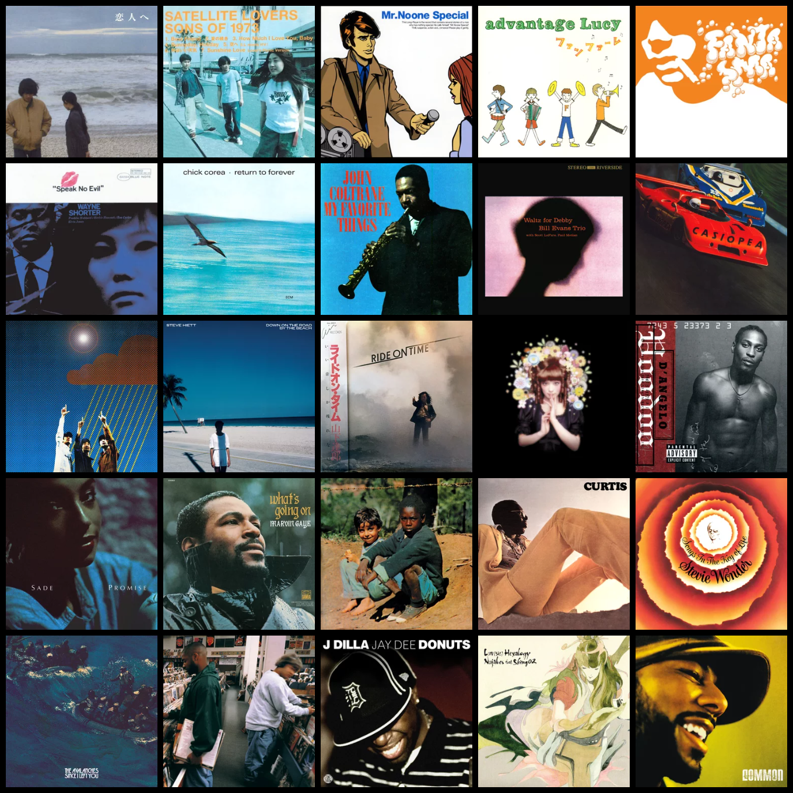
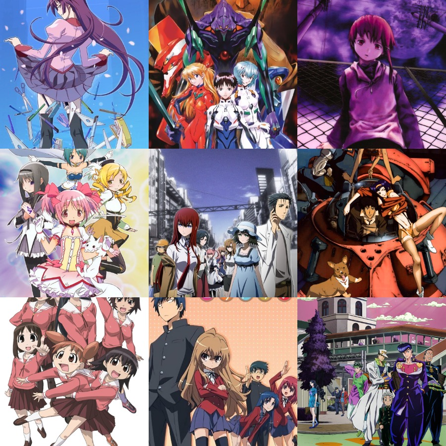
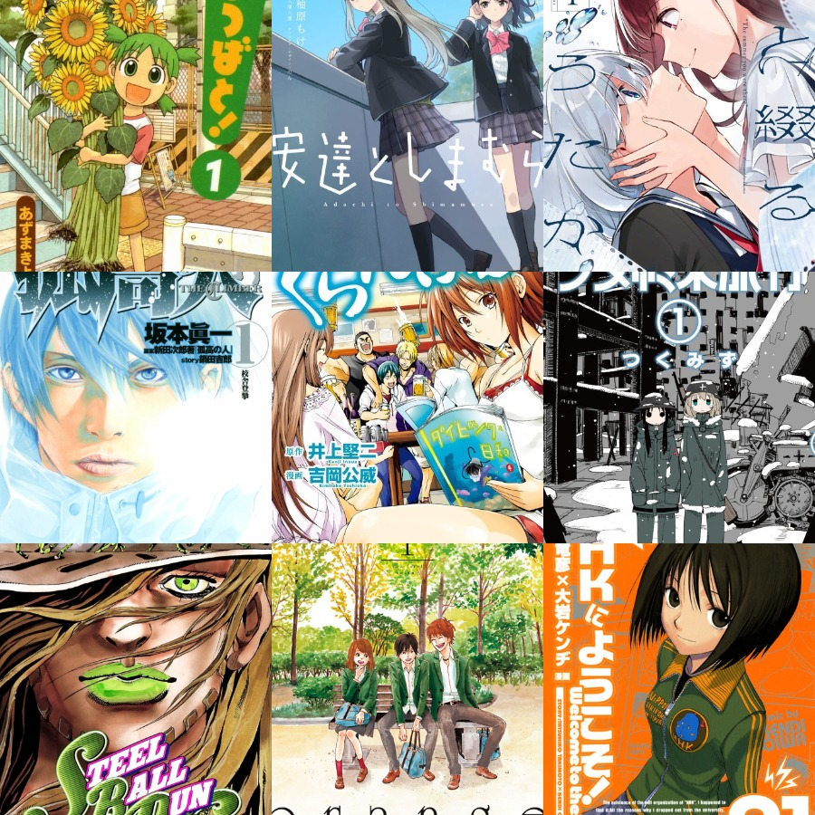

My Favourite Things
My Favourite Things
Music

Music is probably my favourite thing ever! I love it so much that I have dedicated pages for it!
So here I'll just list some of my fabourite things to listen to!
In terms of style, I enjoy listening to most styles and discovering new things is always something I'm looking to do. My favourite genres would be: Jazz (all of it), Shibuya-kei, Soul, MPB/Bossa Nova and anything with samples or that mixes electronic and more traditional approaches together.
Favourite Albums
-
My Favourite Things - John Coltrane
This is my favourite jazz album ever, the title track is the answer I usually give out when someone asks me the terrible question of "What is your favourite song?" lol. There is something so magical about John Coltrane's classic quartet and here they manage to balance beauty and intensity in a way they never manage to replicate exactly. Well, technically its not the classic quartet since the bassist is different - here its Steve Davis and the classic quartet is with Jimmy Garrison on bass - but the rest of the musicians are the same.
Also can we take a moment to appreciate the insanity that is using the coltrane changes over Gershwin's "But Not For Me"? How does it work so well???
-
Fantasma - Cornelius
This album man... its... its a weird album to say the least. First 2 or 3 times I tried listening to it I couldn't even get through half of the album! Yet, the intro track - "mic check" - intrigued me so much with its innovative use of sound design and music production in such an artistic way to write what should be a shitty comedy sketch in a way that is somehow profoundly moving and that you will keep coming back to.
I mean - could you even call it a proper song? As I continued listening, and the initial distate for its eclectic and all over the place style sound was left behind, I began to hear this same unique and perfectly executed experimentation with weird sounds and electronic music alongside the more traditional songwriting of cornelius throughout all the songs. With each listen, I heard new sounds and eventually it became one of my biggest sources of inspiration for everything.
Its not just its unique sound that I love, however, its variety in emotion throughout is like I've never heard before. There are mellow and dreamy sounds, there are fun and ridiculous sounds, there are happy sounds, there are calm sounds, there are intense sounds, there are melancholy sounds. Its noisy, its quiet, its experimental, its familiar, its ahead of its time yet it also sounds dated. I guess, to me, it might just be everything.
-
Donuts - J Dilla
An album that showed me the beauty of sampling by the producer who inspired me to pick up music production.
So many beautiful samples manipulated in such a beautiful way that they allow J Dilla to sing through them. Somehow, there's so much emotion poured into each of the sample chops, each drenched with such a pure love for the original tracks yet the complete reinvention of the songs elevates them further. An album where its parts are near perfect yet somehow the whole manages to be far greater than the sum of its components.
Oh, I can't stand to see you cry...
-
Lamp - For Lovers
Lamp's "for lovers" has become my go-to comfort album. The perfect album to read manga or study to for me. While it may be the least unique or influential album on the least it is an album that just perfectly suits me. The soft tones, the touch of nostalgia combined with the touch of positivity. The jazz, the bossa nova, the chords (and oh my god the chords...), the melodies, everything was made perfect for my tastes. More than just that however, the album shines in how concise it provides a complete experience. Not a single second is boring or recycling ideas, each song complements the previous songs perfectly and no two songs serve the same function. The story created by each songs individual sounds is beautiful in of itself.
This album just sounds like reading wholesome slice of life or romance manga with a warm coffee on a slow and quiet spring morning, and there is nothing more me than that
-
Milton Nascimento & Lô Borges - Clube Da Esquina
This album is just so emotionally powerful to me. So many songs that have moved me to tears - in fact it was the first album to ever move me to tears on first listen - midway through "Clube Da Esquina nº2". The genius of Lô Borges perfectly complements the genius of Milton Nascimento here and the sound of the album is just so entrancing.
The songwriting and isntrumentation is exceptional throughout, perfectly combining influences from the beatles and traditional Brazilian styles in a way that elevates both those sounds. The lyrics are some of my favourites of all time and I think the opening track "Tudo O Que Você Podia Ser" has some of the most powerful lyrics of all time - especially when placed within the context of 1970s Brazil and the oppressive government.
-
Waltz For Debby - Bill Evans Trio
Ok I was only planning on doing 5 favourite albums but I had to add a bonus jazz one...
Bill evans... this has been said many times, but he is the pianist with possibly the greatest voicings I've ever heard. He manages to bring out so much emotion from the piano with each individual chord... I don't even know how. And that's just talking about Evans... The interplay between the trio as a whole is incredibly special, especially that of Scott LaFaro on the bass. The bass on this album doesn't just accompany - it provides melodic ideas and development just as the piano does.
This album is so special to me as it has accompanied me through my hardest moments - it puts me at ease.

Anime
You might not have noticed this yet but I'm actually a big anime fan! Growing up my favourite anime was JoJo's Bizarre Adventure, but now I prefer to watch romance, slice of life or psychological animes more. There's something I find so comforting about the pretty art styles of anime compared to other more live action shows...
Below you can read a rant about some of my favourite animes, also I cannot guarantee that there won't be any spoilers in these so be careful!!
Favourite Animes
-
The Monogatari Series
I love the characters and writing its so good... you have to ignore some stuff but aside from that...
Also the art style and soundtrack is too good!
-
Cowboy Bebop
Love the art and the characters, this story taught me to appreciate charcters in stories, changed the way I look at stories in general.
-
Evangelion
Is there anything I can say about this that hasn't already been said? I'm literally rei...
-
Madoka Magica
Peak of doomed yuri... makes me cry every time... I love homura as a character and how homura and madoka compliment each other as characters. It's so beautiful... hopefully the movie will be just as peak!
-
Serial Experiments Lain
Scarily ahead of its time... story is great and I probably relate way more than I would like to... aesthetic is also unmatched.

Manga
I love reading manga especially romance and slice of life stuff! Also I lowkey read too much yuri lol...
Characters
Most of my favourite characters are just introverted anime girls (except faye)... sigh... they're just like me...
Video Games
Under construction
Art
Under construction

 Mizutani
Mizutani